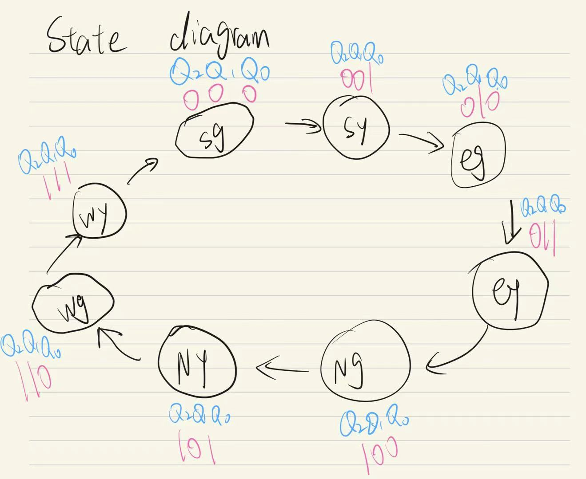
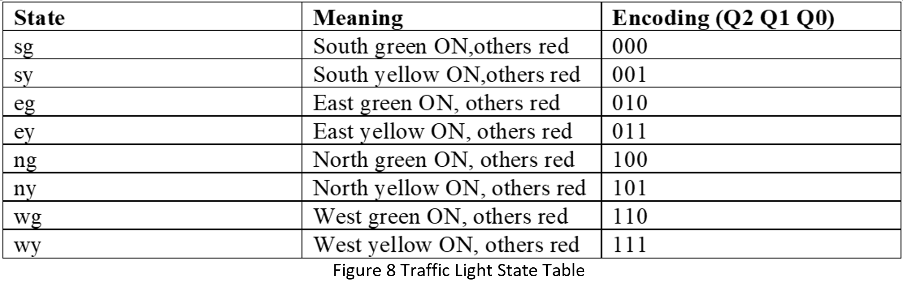
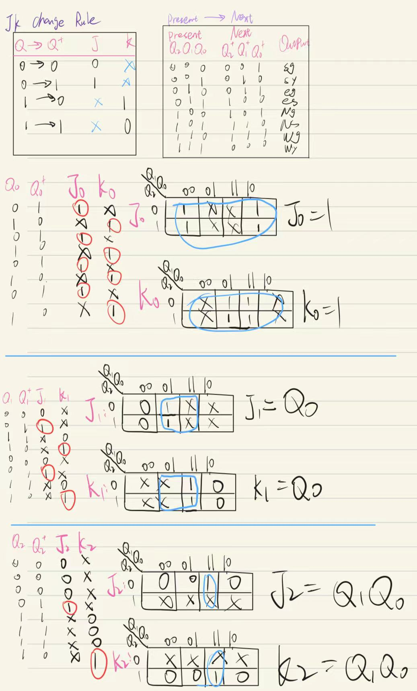
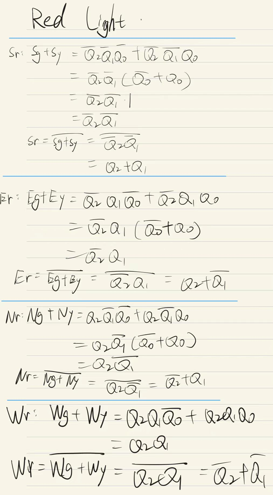
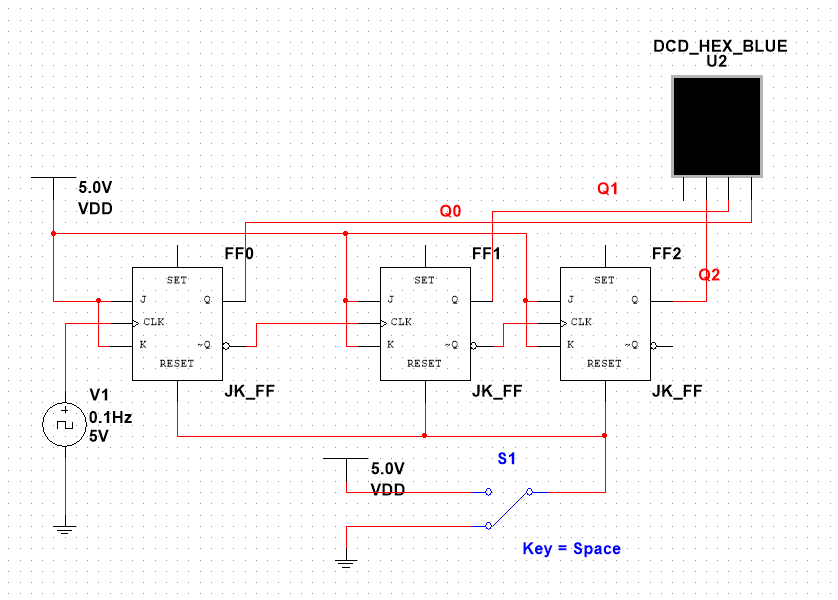
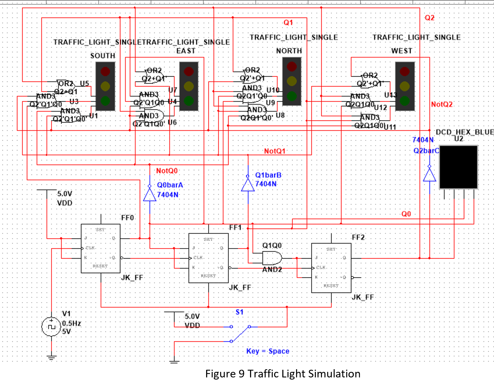

Multisim controller operating with one direction active and
the other three directions held red.
Project overview
Coordinating four directions through eight states
The controller cycles through green and yellow phases for the
south, east, north and west approaches. In every state, the
other three approaches remain red.
Three JK flip-flops store the encoded state. Combinational
output logic then converts each state into the required set
of traffic-light signals.
Role
Individual developer
Sequence
Eight states
State memory
Three JK flip-flops
Project result
74%
State model
Defining the complete operating sequence
I first represented the required sequence as a state diagram,
then assigned a three-bit code to every green and yellow phase.
This created a traceable specification for the sequential circuit.

Eight-state sequence covering all four traffic directions.

State meanings and Q2-Q1-Q0 binary encoding from 000 to 111.
Logic derivation
Deriving excitation and output equations
JK excitation requirements were obtained from the present and
next states. Karnaugh-map simplification was then used to produce
practical input equations and traffic-light output logic.

JK excitation tables and simplified flip-flop input equations.

Output decoding equations derived for the traffic-light phases.
Circuit implementation
Building the controller in Multisim
The three-bit state generator was verified as a separate block
before it was connected to the complete four-direction output
circuit. A reset input returns the sequence to its initial state.

Three-JK-flip-flop state generator and reset input.

Complete controller combining state memory and output decoding.
Simulation verification
Checking timing, sequence and reset behaviour
Four-channel waveforms were used to check the state-bit timing
and confirm the expected frequency division through the sequence.
The complete controller was then observed across its operating
states and reset to confirm that the traffic-light outputs returned
to the defined starting condition.